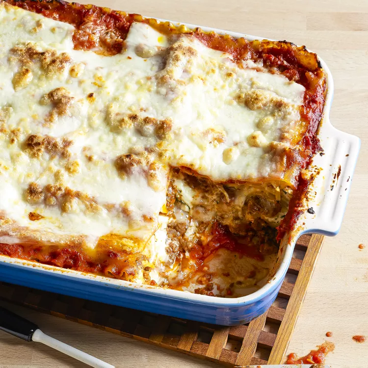

Lasagna

Short History of Lasagna
We may never know the exact person who created lasagna. In fact, this dish was not named after an individual, but after a fermented noodle called laganon that was frequently used in ancient Greece where lasagna originated. In the beginning, lasagna was sprinkled with toppings, and eaten with a pointed stick. Unrecognizable by today’s standards, the only similarity between the two was the layering of pasta and sauce.
Ingredients
- 1 pound sweet Italian sausage
- ¾ pound lean ground beef
- ½ cup minced onion
- 2 cloves garlic, crushed
- 1 (28 ounce) can crushed tomatoes
- 2 (6.5 ounce) cans canned tomato sauce
- 2 (6 ounce) cans tomato paste
- ½ cup water
- 2 tablespoons white sugar
- 4 tablespoons chopped fresh parsley, divided
- 1 ½ teaspoons dried basil leaves
- 1 ½ teaspoons salt, divided, or to taste
- 1 teaspoon Italian seasoning
- ½ teaspoon fennel seeds
- ¼ teaspoon ground black pepper
- 12 lasagna noodles
- 16 ounces ricotta cheese
- 1 egg
- ¾ pound mozzarella cheese, sliced
- ¾ cup grated Parmesan cheese